Majesty 145 strengthens Superyacht Collection
Designed as a floating villa rather than simply a superyacht, the two-pool Majesty 145 superyacht combines contemporary styling with everyday liveability.
- Review
- 25 Sep 2026
- 45 m
- 420 GT
- Gulf Craft
Searches the stories, shows, films and places on this page. The full archive search comes with the full site.
Arrow keys to move, Enter to open, Esc to close
Launches, deliveries, marinas and deals, reported by the Yacht Style newsroom.
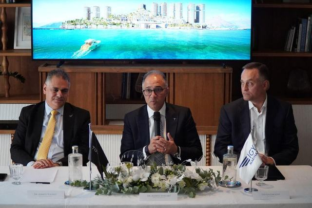
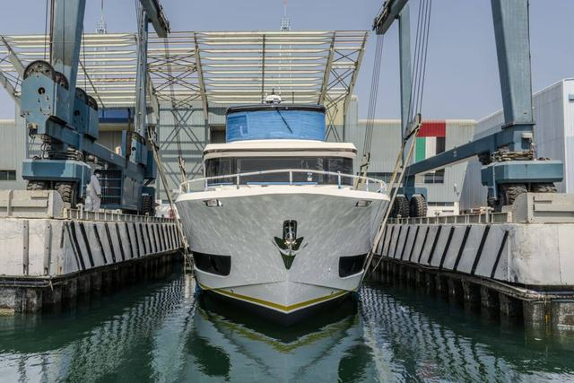
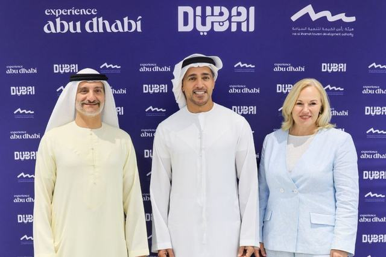
Representatives of Abu Dhabi, Dubai and Ras Al Khaimah tourism bodies signed the UAE Yachting Alliance.


Every review carries the numbers that matter: length, builder and the year we stepped aboard.
All reviews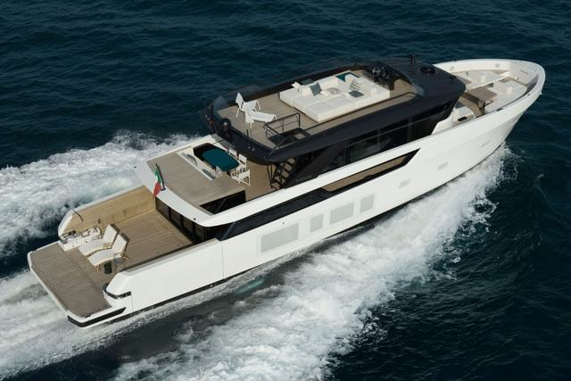
Bluegame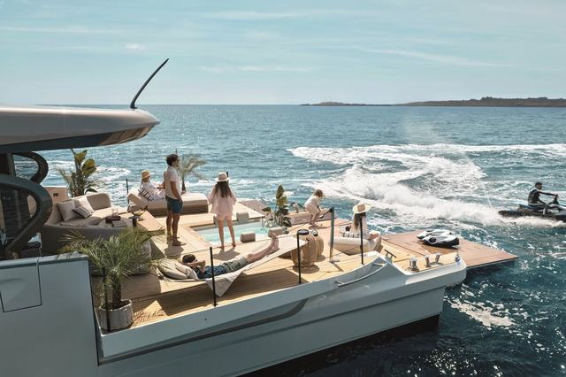
Azimut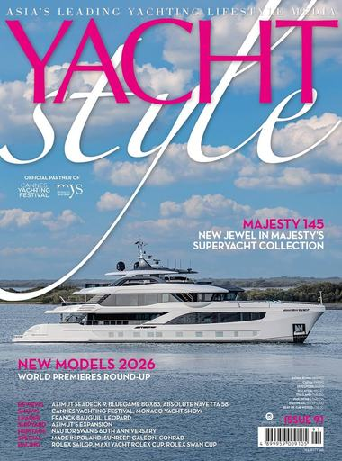
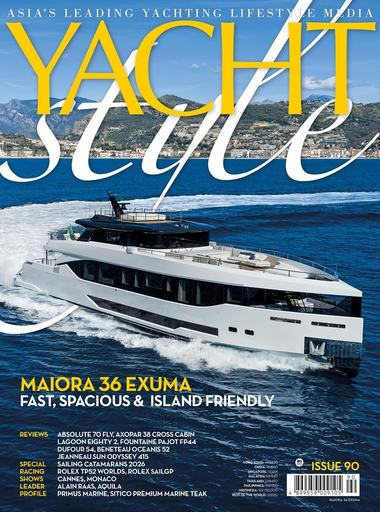
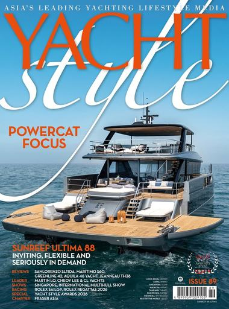

Issue 91 includes the annual feature on New Models, previews of the Cannes and Monaco shows, and reviews of new motoryachts by Majesty, Azimut, Bluegame and Absolute.
Owners, builders and the advisers they trust, in their own words.
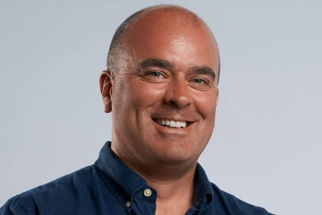
ColumnIn a Column for Yacht Style, Ian Harris, the founder and CEO of Phoenix Yacht Management, outlines the trends shaping today’s refit projects.
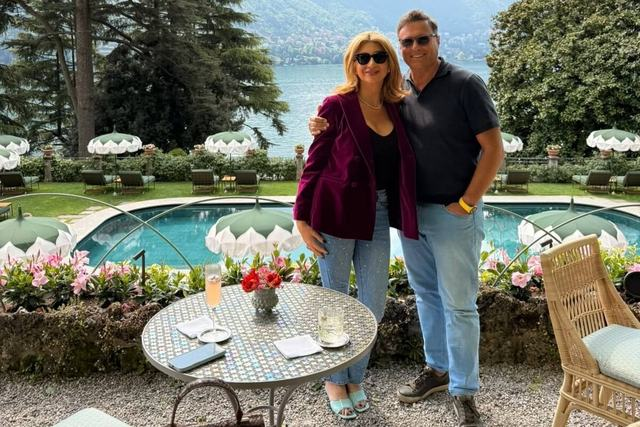
Based in the UAE for over 13 years, Marco Tedeschi and his family enjoyed a 2,000nm tour of the Mediterranean on their Seadeck 6 this summer.
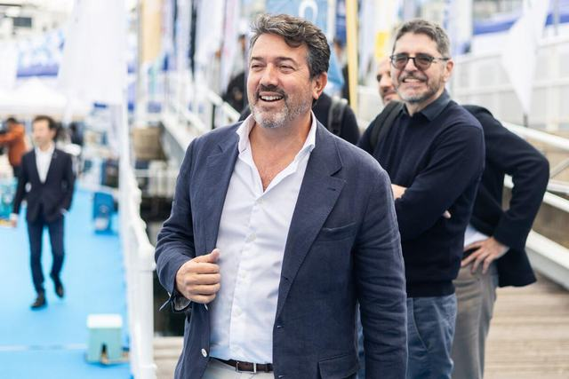
The Asiamarine founder and CEO explains the company’s expansion to Saint-Tropez.
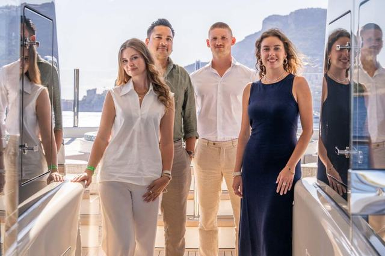
Teji | Cowie, a specialist superyacht law firm, is celebrating its first anniversary, having advised on more than 25,000GT of vessels in its debut year.
The waters this edition is written for. A solid point has a Yacht Style story today; an open point is coverage to come.
 UAE20 Feb 2025
UAE20 Feb 2025
 UAE1 Oct 2026
UAE1 Oct 2026
 UAE1 Oct 2026
UAE1 Oct 2026
 UAE20 May 2026
UAE20 May 2026
 Egypt1 Oct 2026
Egypt1 Oct 2026
 Qatar29 Oct 2024
Qatar29 Oct 2024
 Saudi ArabiaPlanned
Saudi ArabiaPlanned
 OmanPlanned
OmanPlanned
Tell us where and when. The charter desk does the rest.
Walkthroughs, sea trials and show films from the Yacht Style channel.
Yacht Style on YouTube
The dates the edition is built around, each with its Yacht Style report.
Dubai, UAE
Dates to be confirmed
The home show of the Arabia edition. Dates and venue of the next edition are not entered yet. Below, the Yacht Style preview of the 2025 show at Dubai Harbour.
Dubai show to elevate region’s maritime lifestyleSingapore
22 to 25 April 2027
Booth and berth sales have been launched for the fifth edition of the festival.
Early bird offers for Singapore Yachting Festival 2027Monaco
Report, 17 Sep 2026
The 35th Monaco Yacht Show is notable for multiple 100m-plus yachts and dozens of world premieres.
Monaco Yacht Show 2026 in focusThe builders in this edition’s stories. To stand beside them, ask for the media kit.
The media kit sets out the audience, the formats and the rates of the Arabia edition.
Formats
On screen: Majesty 100 Terrace A Yacht Style film